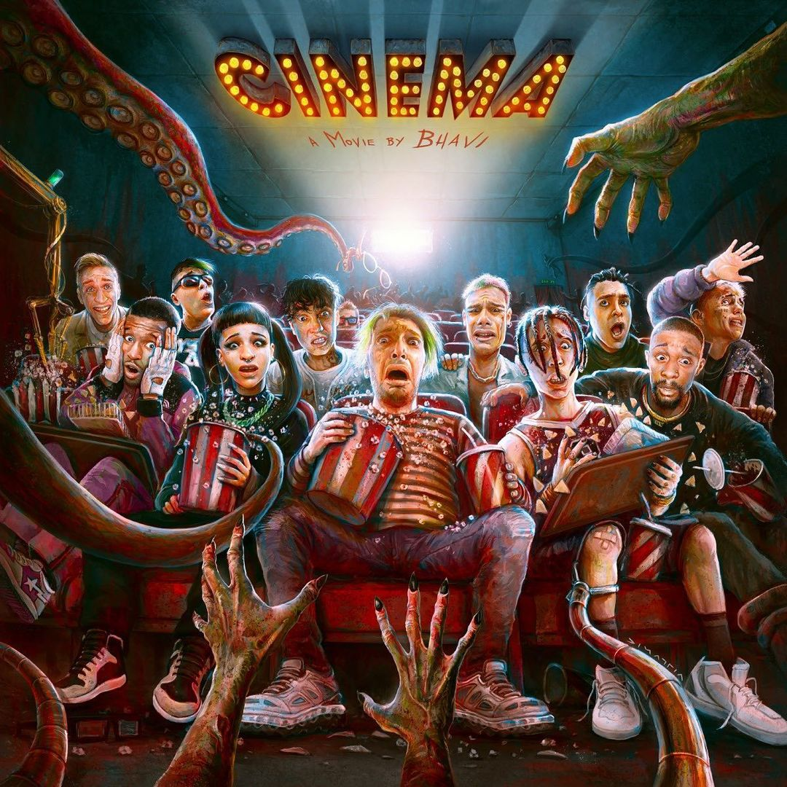

TOP 5 DISCOS 2021
CINEMA
Sintetizado en un disco de 17 tracks producidos por Halpe, Bhavi, trabajó sobre un concepto muy particular, vinculado a los sueños y su materialización. Tal como él lo describe: “Decidí usar CINEMA como una metáfora conceptual para este disco. Una metáfora que habla de materializar tus sueños, en donde el cine representa la vida y la película, el sueño”.
Sin lugar a dudas, el artista se ha convertido en una de las figuras de trap con mayor crecimiento y proyección internacional, y de este modo era de esperarse un proyecto con grandes colaboraciones.

DESDE EL FIN DEL MUNDO
“Todos diciendo qué bien que me va, pero ninguno me pregunta cómo estoy”, canta en “Sudor y Trabajo”, tema que abre el álbum en la que él solo, sin ninguna colaboración, cuenta cómo ha sido el camino hacia la fama durante estos cuatro años. La figura del trapper, vista como alguien que solo se preocupa de ganar fama y dinero, es reivindicada demostrando que muchas veces no es un camino de rosas.
El sentimiento de comunidad entre los traperos es muy fuerte, algo que se puede ver a lo largo del álbum con las colaboraciones, casi todas ya habituales, entre los trabajos de Duki. Lucho SSJ, su “apadrinado” musical, aparece en “Cuanto”, otra canción sobre el dinero, mientras que sus buenos amigos Ysy A, Khea y Neo Pistea colaboran en “Pintao”, “Muriendome” y “Fifty Fifty”; esta última, también con Pablo Chill-E, Obie Wan Shot, Young Cister y Julianno Sosa. Con “Desde El Fin del Mundo”, Duki planta la bandera en el país austral como base del trap latino.
THE GOOD TRIP
“Me doy cuenta que hice lo que varios quieren hacer, pero no lo hacen porque se encierran en una sola cosa. Yo soy parte de esa gente que se arriesga a hacer cosas nuevas. Experimentar e innovar, de eso es de lo que se trata”, destaca sobre la presencia del reggaetón, el R&B y más en su álbum debut, después de que durante todo este tiempo la gente lo ha clasificado como un artista de trap.
The Good Trip llega en un momento en el que se ha demostrado que las propuestas más interesantes se encuentran en aquellos que no le tienen miedo a romper las etiquetas de la industria.

EL DISKO
El disko es una demostración pura de esa dualidad, donde el pibe metalero y guitarrista virtuoso se pone a experimentar con programaciones y autotune; y le sale genial. Lejos de ser una provocación (algo que le encanta), son las ansias de alguien desprejuiciado por hacer lo que le gusta y lo que mejor le sale.

ATRAPADO EN LAS COLINAS
Con respecto a los temas del disco, el oriundo de Río Negro muestra un estilo musical orientado al trap, aunque incursiona en otros géneros. Entre las canciones más destacadas se encuentran "Fuera de Casa" ft Luck Ra, cuyo video fue subido hace un mes y ya cuenta con más de 500 mil vistas en YouTube, "Amor de Pasti", "Nueva Era" y "Noches Infinitas" ft KYOTTO.